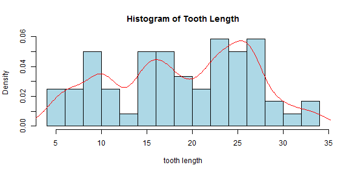
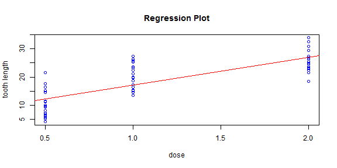

Introduction
What is this application used for?
This application is used for exploratory data analysis on the ToothGrowth dataset.
Why do you want to choose this application?
It's helpful, easy to use, and free.
Tri Le
Data Scientist
What is this application used for?
This application is used for exploratory data analysis on the ToothGrowth dataset.
Why do you want to choose this application?
It's helpful, easy to use, and free.
data(ToothGrowth)
hist(ToothGrowth$len, probability=TRUE, breaks=20, xlab='tooth length', col='lightblue',
main='Histogram of Tooth Length')
lines(density(ToothGrowth$len, adjust=0.5), col="red")

with(ToothGrowth, {plot(len~dose, main="Regression Plot", xlab="dose", ylab="tooth length",
col="blue")
abline(lm(len~dose, data=ToothGrowth), col="red") })

This application has been developed and deployed at:
https://wawww.shinyapps.io/shinyapp_proj
The source code of this application can be obtained at:
https://github.com/wawww/shinyapp_proj